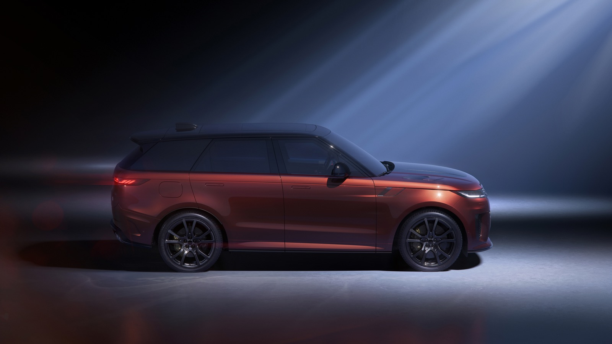
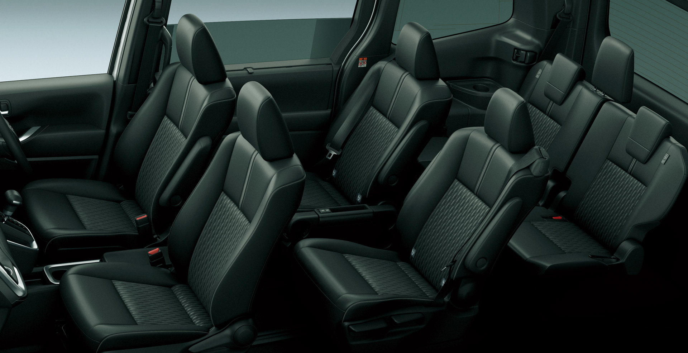
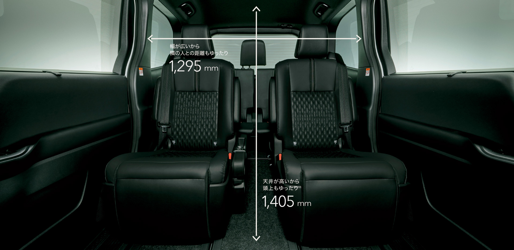
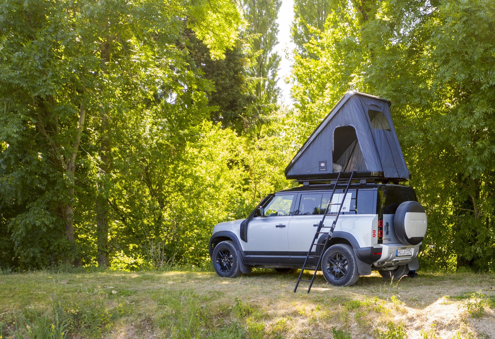
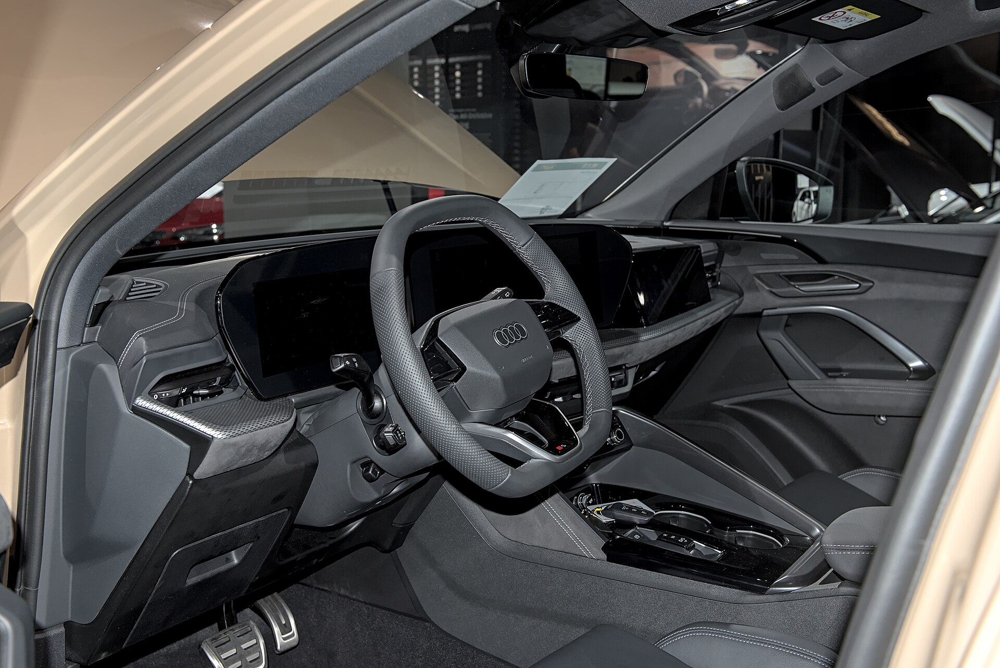
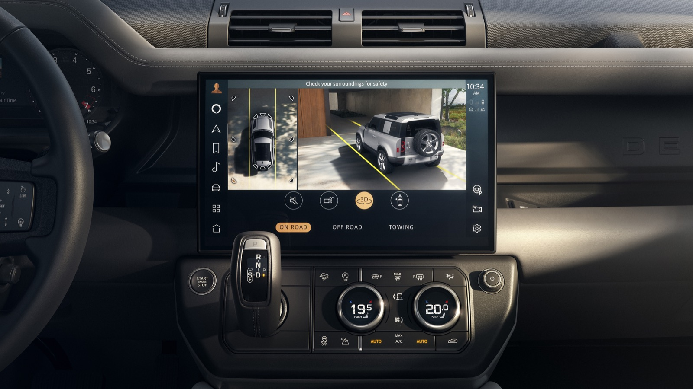

THE ART OF CHOOSING YOUR CAR
LUXURY / 上質に、浸る。
佇まいに、
心を預ける。
ドアを閉めて、いつもの街を少し遠くに。
車内で過ごす時間そのものを、楽しみにする一台。
A DIFFERENT KIND OF EXCITEMENT
惹かれる理由は、
一台ずつ、違います。
ドアを開けた瞬間の高揚感。後席から聞こえる笑い声。
道具を積み込む朝。運転席を囲む、新しい光。
まずは、車と過ごしたい時間から眺めてみます。
LIFE, TOGETHER
「一緒に行こう」が、
増えていく。
少し大きな買い物も、友人とのキャンプも。
やがて家族が増えた週末も。
暮らしの変化を、楽しみにできる車があります。

TOYOTA NOAH
行き先より、
一緒の時間。
後席で過ごす人の居心地や、荷物を積み下ろすときの使いやすさ。運転席の満足とは違うところにも、車を選ぶ理由があります。
元資料の純正中央画面は最大10.5型。12型条件は交換適合の確認が必要です。

A PLACE OF YOUR OWN
好きな道具と、
日常のその先へ。
テントを張って、コーヒーを淹れる。
少し土のついた道具を、そのまま積んで帰る。
眺める喜びと、使う楽しさがつながる車を。
THE COCKPIT EXPERIENCE
次に惹かれるのは、
運転席の景色かもしれません。
画面がつながり、光が空間を縁取る。
車を選ぶ視点が、コックピットから変わる。
大きさの数字だけでは伝わらない、
乗り込んだ瞬間の感覚を見つけます。

ここで描く暮らしや過ごし方は、車のデザインや装備から想像した編集上の提案です。写真には海外仕様・別年式・オプション装着車を含みます。装備と購入条件は車種詳細で確認できます。
見失わないために。
新車・中古の両方で検討
メーターは含めません
月数回の外出・旅・キャンプ
自宅でのEV充電は不可
運転は本人のみ／広い平置き駐車場／リセールは参考情報。トヨタ・レクサスを優先せず、マツダは実車の印象から主な候補に含めていません。
EXPLORE YOUR POSSIBILITIES
心が動いたら、条件で確かめる。
車種の詳細でも、一台ずつの世界観を眺められます。気になる車を見つけたら、同じ条件で比べます。
27 台の候補 新車の参考価格で絞ると、中古で予算内の車も非表示になります。
積載目安：特大・大・中4人乗車を基本に、3列シート車は3列目を格納・2列目は使用する前提です。
区分の考え方
特大：大きな荷物を重ねたり分けたりしやすい、特に余裕のあるクラス。大：旅行やキャンプの荷物を載せやすいクラス。中：日常の荷物や2人旅を基本に、4人キャンプでは道具の量を調整したいクラス。
公開されている荷室構成・車格から整理した編集上の目安です。統一規格で測った容量値ではありません。グレードや電池、格納後の段差、背面ドアの開き方で使い勝手は変わります。実際のテントやコンテナの寸法を合わせて確認してください。
価格・装備は原資料（2026.11.22）の参考値が中心です。今回の再確認範囲は詳細に表示しています。「対応仕様あり」は、すべての年式・グレードでの適合を意味しません。
候補から外した車 1検討の履歴を見る
候補を読み込んでいます。
A CLOSER LOOK / LAND CRUISER
250か、300か。
価格差に、何を求めますか。
直近の相談で残った2台を、使い方から比較します。
FJは、もう少し小さく使うための別案です。
250と300は、全幅が同じ掲載例も。
下表の公式掲載仕様では、250と300の全幅・ホイールベースは同じで、全長差は60mmです。「250なら十分コンパクト」とは考えず、普段の道で確かめます。
| 代表仕様 | 250 ZX | 300 ZX ディーゼル | FJ |
|---|---|---|---|
| 全長 | 4,925mm | 4,985mm | 4,575mm |
| 全幅 | 1,980mm | 1,980mm | 1,855mm |
| ホイールベース | 2,850mm | 2,850mm | 2,580mm |
| エンジン・変速機 | 2.8L 直4ディーゼル 8AT | 3.3L V6ディーゼル 10AT | 2.7L 直4ガソリン 6AT |
250は2024年4月、300は2026年9月、FJは2026年5月時点の公式掲載例です。ヒッチメンバー等で寸法は変わり、300のHEV仕様は別に確認が必要です。出典：トヨタ LAND CRUISERブランドサイト（2026.11.23確認）
まず250と300を同じ日に、同じ道で試乗します。300の力の余裕や乗り心地に価格差の意味を感じるか。250の道具らしさに、より惹かれるか。どちらが上かより、何に追加で払いたいかを確かめる順序です。
事実：トヨタは250を中核モデル、300をフラッグシップ、FJを扱いやすいサイズのシリーズとして説明しています。上の試乗順序と魅力の捉え方は編集上の提案です。トヨタ公式発表（2026.05.14）

DEFENDER / 2026MY・中央画面と操作系の参考写真（海外仕様）出典THE VIEW FROM YOUR SEAT
12インチの先に、
毎回の使い心地があります。
大きい画面でも、地図が遅い、操作が深い、カメラが見づらいと不満は残ります。試乗では、自分のスマートフォンをつないで確認します。
- 地図を動かす・目的地を音声で入力する
- CarPlay / Android Autoの接続を試す
- 360度カメラと地図の切替を試す
- エアコンや音量を迷わず操作できるか
本体だけでなく、取付費・カメラ連動・車両設定・保証への影響まで見積りに含めます。交換できることが確認できるまでは、条件を満たす車として扱いません。
THE LONG VIEW
買える価格と、
付き合える費用。
月に数回の利用でも、駐車場や保険は続きます。
新車と中古を比べるときは、支払総額と保有中の費用を同じ期間で並べます。
大画面の後付けで、足回りの構造や後席の広さまで新しくなるわけではありません。
自宅充電なしでも候補には残します。充電を週末の行動に組み込めるかが判断点です。
保有費用のメモ
見積書や自分の想定を入力します。金額はすべて万円です。
購入支払総額を入力すると計算します。
購入総額 − 想定売却額 ＋（年間維持費 ＋ 駐車場月額 × 12）× 年数 ＋ 修理予備費。ローン金利等は購入総額に含めてください。売却額は保証されません。未入力は0として計算します。年間維持費に駐車場代を重ねて入れないでください。
FROM RESEARCH TO A TEST DRIVE
次は、実車で答え合わせ。
試乗で気づいたことをこの端末に保存します。端末間同期は準備中です。別端末へ移す場合は下のバックアップ（JSON）をご利用ください。
SOURCES & EDITORIAL NOTES
事実は出典へ。好みは実車へ。
内容更新：
引継ぎ資料：2026年11月22日版
今回の再確認
- トヨタ：250 室内空間中央12.3型の設定／2026.11.23確認
- トヨタ：300 一部改良HEV追加と発売日／2026.09.16発表
- トヨタ：300 WEBカタログ12.3型と8型の仕様差／2026.01版
- トヨタ：FJシリーズ発売発売時価格・動力方式・位置付け／2026.05.14
- トヨタ：FJ 室内空間国内VXの中央12.3型／2026.11.23確認
- BMW Japan：X3中央14.9型／2026.11.23確認
資料の読み方
26車種の候補・購入条件・価格や装備の参考値は、元の「車選びプレゼン 写真強化版 2026-11-22」から引き継いでいます。FJを加えて27車種を収録し、ハリアーは候補外の履歴に移しています。初期状態の検討対象は26車種です。候補外への追加や再検討への復帰により、表示数は変わります。全車種の最新価格を再調査した資料ではありません。
価格は主に新車の本体目安です。諸費用・オプション・中古車の状態は含みません。車種の詳細からメーカー公式ページと、元の写真掲載元を参照できます。
「魅力」「比較したい点」「編集上の判断」は、この購入条件に合わせた解釈・提案です。画面サイズは中央のナビ・操作画面を指し、メーターやHUDは含みません。
写真には海外仕様や別年式、オプション装着車を含みます。各写真の撮影・提供元、掲載元URL、ライセンス、年式・市場、加工の有無は詳細ギャラリーおよび写真の出典・利用条件ページに記載しています。各写真の権利は各撮影者・提供元・メーカーに帰属します。
候補外・比較候補・理由のメモ・試乗メモ・費用入力は、この端末に保存します（端末間同期は準備中です）。このサイトのバックアップ（JSON）を使うと、同じサイトの別ブラウザへ内容を保存・復元できます。以前のChatGPT Sites版のメモは自動では引き継がれないため、試乗メモはコピーして貼り付け、候補や費用はあらためて入力してください。右上の内容更新日時は、車種情報やページ構成を反映した日本時間です。
写真の出典・利用条件：入口・4つの世界観・特集および全27車種の写真情報（撮影・提供元、掲載元、ライセンスURL、年式・市場、加工の有無）は写真の出典・利用条件ページにまとめています。写真は車の雰囲気や室内空間を伝える参考であり、掲載価格と同じ仕様を示すものではありません。